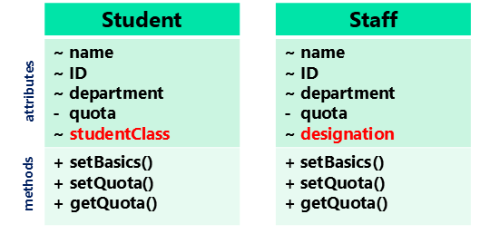
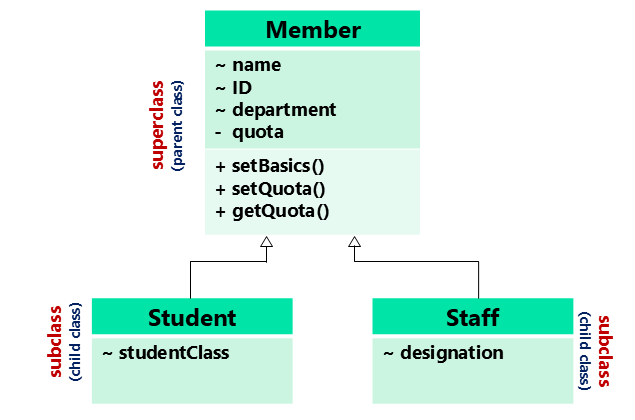
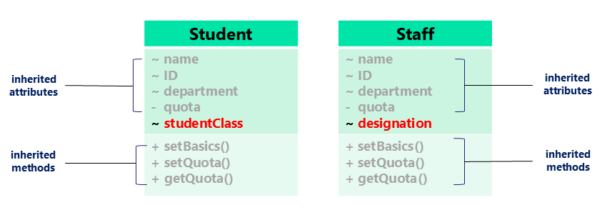

Scroll down to navigate through the curriculum. Explore interactive code snippets, conceptual diagrams, and test your knowledge at the end of each section.
Welcome to the introductory lesson on Java Inheritance. Here is our agenda for this module:
super keywordImagine a scenario for a School Library serving two types of members: Students and Staff. Let's look at how we might initially design their classes:
Attributes:
Methods:
Attributes:
Methods:

We can propose an improved design using inheritance. A parent class "Member" holds common characteristics, while "Student" and "Staff" become subclasses.

Once defined as subclasses, Student and Staff automatically inherit the characteristics of Member without re-specifying them. They can also define their own unique characteristics.

Let's look at the actual code implementation of the concept using Java.
class Member {
String name;
String ID;
String department;
private int quota;
void setBasic(String n, String i, String d) {
name = n;
ID = i;
department = d;
}
void setQuota(int q) { quota = q; }
int getQuota() { return quota; }
}
class Student extends Member {
String studentClass;
}
class Staff extends Member {
String designation;
}extends is the core mechanism in Java to create a subclass. The subclass automatically gains access to the non-private members of the superclass.
Here is how we demonstrate the use of the classes we just created.
import java.util.Scanner;
public class testInheritance {
public static void main(String[] args) {
Student s1 = new Student();
// Calling inherited method
s1.setBasic("Koko", "p1234567", "EEE");
System.out.println(s1.name);
// Calling another inherited method
s1.setQuota(20);
System.out.println(s1.getQuota());
}
}Click run to execute...
setBasic() and getQuota() are defined in Member, they are accessible through an object of the Student class (s1) because of inheritance.
Let's look at another scenario with Father and Son classes to understand constructors and attribute access.
class Father {
private double salary; // Private!
String surName = "Chee";
String givenName;
public Father() { // Constructor
givenName = "Senior George";
salary = 2000;
}
public double getSalary() {
return salary;
}
}
class Son extends Father {
private int score;
public Son() { // Constructor
score = 80;
givenName = "Little George"; // Accessing parent's non-private variable
}
public int getScore() {
return score;
}
}givenName is accessible, but salary is private to Father).
Code to test the Father/Son inheritance we just created.
import java.util.Scanner;
public class testInheritance {
public static void main(String[] args) {
Son boy = new Son();
System.out.println("Boy's surname: " + boy.surName);
System.out.println("His family income: " + boy.getSalary());
System.out.println("His score: " + boy.getScore());
}
}Click run to execute...
getSalary) and access variables (surName) inherited from the Father class.
A subclass inherits all member variables and methods from its superclass. Overriding happens when a subclass provides its own specific version of an inherited method by using the exact same method name.
class Father {
public void printSalary() {
System.out.println("My salary is " + salary);
}
}
class Son extends Father {
// Overriding the parent's method!
void printSalary() {
System.out.println("I wish to earn 100k.");
}
}Let's demonstrate the execution of method overriding. We'll call the method on an object of the subclass.
public class testOverriding {
public static void main(String[] args) {
Son boy = new Son();
boy.printSalary(); // Which one gets called?
}
}Click run to execute...
Here is a practical example using a Circle superclass and a Cylinder subclass to calculate areas (and volumes).
class Circle {
double radius;
double getArea() {
return (radius * radius * 22/7);
}
}
class Cylinder extends Circle {
double height;
// Overriding to calculate Cylinder volume
double getArea() {
return (radius * radius * 22/7 * height);
}
}Cylinder class overrides getArea() to include the height calculation, completely replacing the simple circle formula.Instead of rewriting the entire logic in the overridden method (like repeating radius * radius * 22/7), we can access the original superclass method using the super keyword.
class Cylinder extends Circle {
double height;
double getArea() {
// super.getArea() calls the Circle's getArea() method!
return (super.getArea() * height);
}
}Cylinder c1 = new Cylinder(); c1.radius = 10; c1.height = 100; System.out.println(c1.getArea());
Output...
super keyword allows a subclass to invoke methods or constructors from its immediate parent class.Inheritance mimics real-world taxonomy. General categories branch into more specific sub-categories.
To summarize, why do we use inheritance in software design?
You do not need to create classes from scratch every time; you can leverage existing code.
By finding existing classes with similar attributes and behaviors, you can simply extend them.
Inherit functionality and add new attributes or behaviors, promoting organized structure.